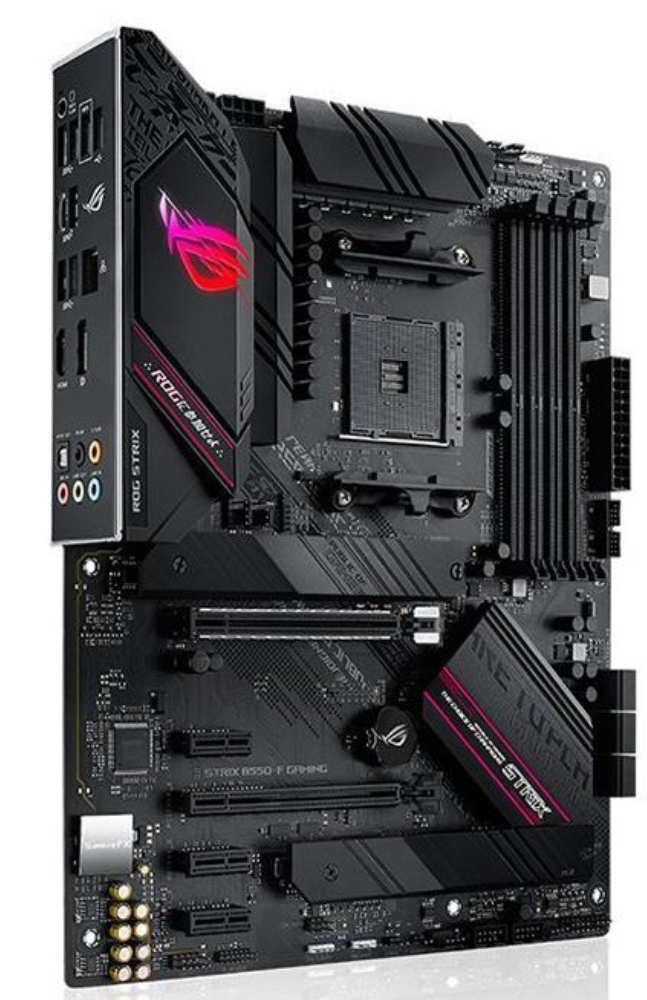

Yüksek performanslı oyun deneyimi için tasarlanmış, RGB aydınlatmalı ve gelişmiş bağlantı seçeneklerine sahip anakart.
| Özellik | Değer |
|---|---|
| Soket | AM4 |
| Chipset | AMD B550 |
| RAM | 4x DDR4 Slot (128GB’a kadar) |
| PCIe | PCIe 4.0 x16 + ek slotlar |
| Depolama | 2x M.2 NVMe, 6x SATA |